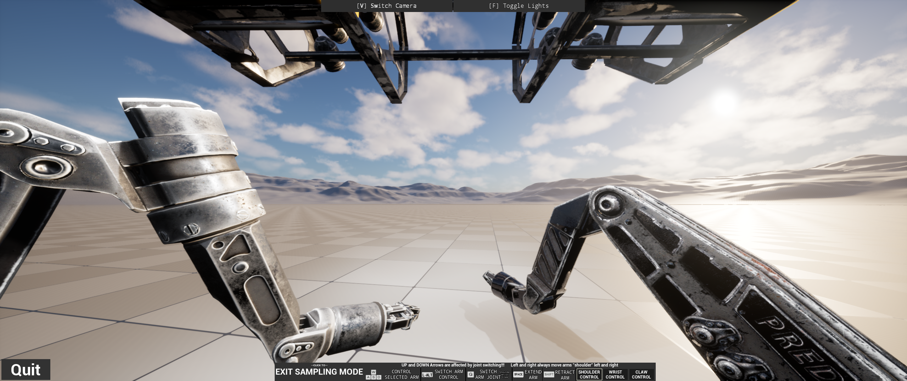
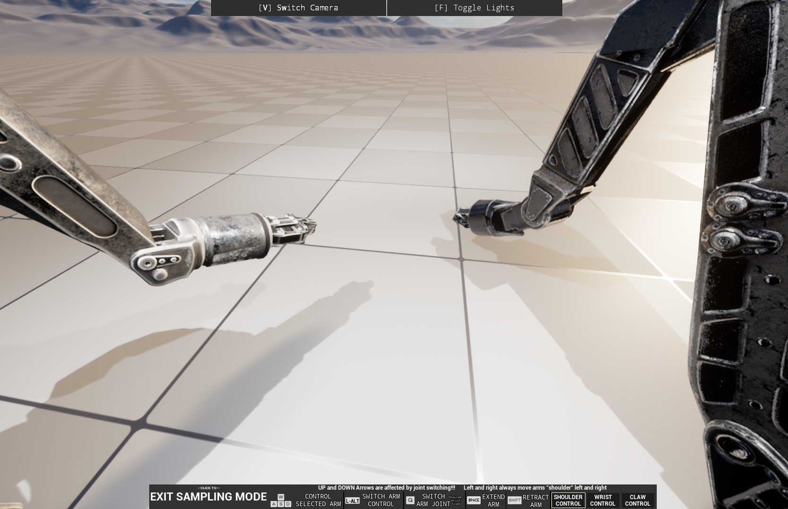

NOAA ROV IK Arms
This demonstration comes from a contracting job that grew out of an internship with NOAA (National Oceanic and Atmospheric Administration). The goal of the project was to build a system enabling inverse-kinematics control of an ROV's robotic arms, allowing for more precise and intuitive manipulation of objects in underwater environments.
Built in Unreal Engine using its built-in Control Rig system, the demo showcases the ROV arm's range of motion within an empty Unreal level.


